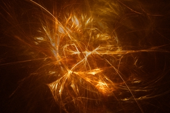
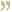
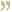

open your soul to deep dance light spirit

coming up...
 Consciousness expresses itself through creation. This world we live in is the dance of the creator. Dancers come and go in the twinkling of an eye but the dance lives on. On many an occasion, when I am dancing, I have felt touched by something sacred. In those moments, I felt my spirit soar and become one with everything that exists. I become the stars and the moon. I become the lover and the beloved. I become the victor and the vanquished. I become the master and the slave. I become the singer and the song. I become the knower and the known. I keep on dancing and then, it is the eternal dance of creation. The creator and the creation merge into one wholeness of joy. I keep on dancing— until there is only... the dance.

Consciousness expresses itself through creation. This world we live in is the dance of the creator. Dancers come and go in the twinkling of an eye but the dance lives on. On many an occasion, when I am dancing, I have felt touched by something sacred. In those moments, I felt my spirit soar and become one with everything that exists. I become the stars and the moon. I become the lover and the beloved. I become the victor and the vanquished. I become the master and the slave. I become the singer and the song. I become the knower and the known. I keep on dancing and then, it is the eternal dance of creation. The creator and the creation merge into one wholeness of joy. I keep on dancing— until there is only... the dance.
